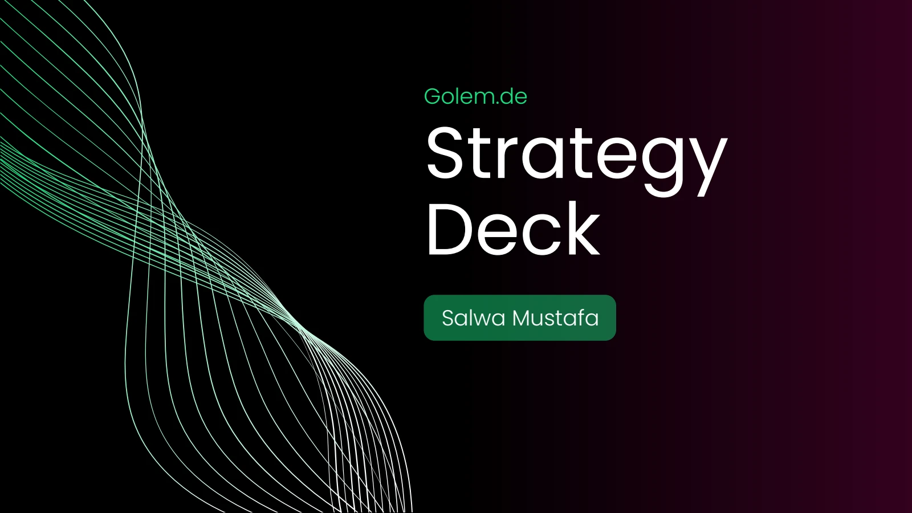
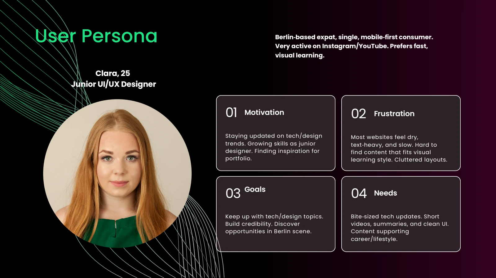
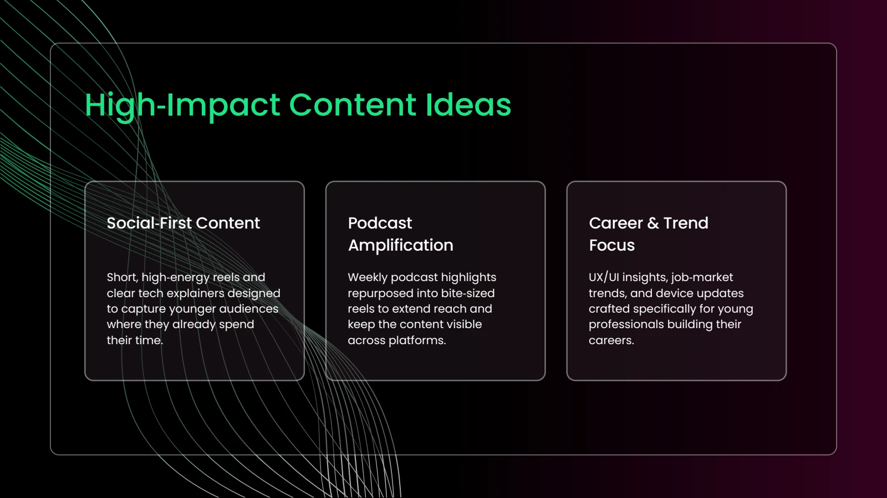
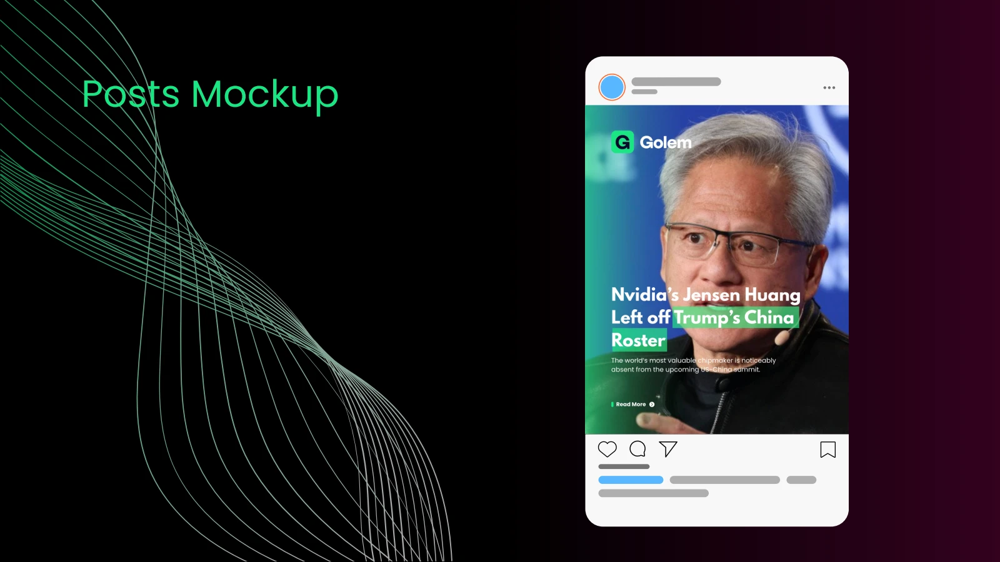

Visual explainers
Short formats introduce technical topics.
Academic collaboration · Golem.de
A strategy deck proposing clearer reading journeys and social content for younger tech audiences.

01 · THE CHALLENGE
The deck identifies dense navigation, heavy advertising, and limited audience diversity as growth challenges. The proposal connects a clearer website experience with content that meets younger readers on social platforms.
PROJECT GOALCreate a more approachable route from discovering a tech story to becoming a returning reader.
02 · UNDERSTANDING

The proposed junior-designer persona values concise, visual learning and career relevance. This shaped a direction built around short explainers, career content, and podcast excerpts.
03 · EXPLORATION

Audience analysis led to content pillars, example posts, and a weekly publishing plan, alongside recommendations for navigation and advertising.
04 · FINAL SOLUTION

Short formats introduce technical topics.
Content themes address early-career readers.
A weekly schedule connects content ideas with delivery.
WANT THE DETAILS?
Explore the original university presentation and supporting process.
View presentation ↗05 · REFLECTION
The final deck provides actionable UX and content recommendations. Its follower, traffic, and engagement percentages are proposed targets, not achieved results.